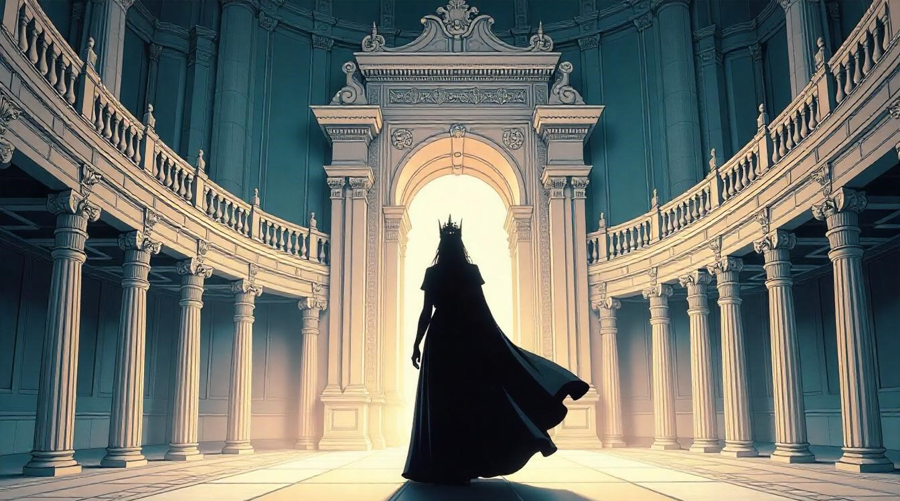

Could Luffy's Mom be an Empress of Amazon Lily?
Boa Hancock is the current Empress of Amazon Lily, with Grandma Nyon (Elder Nyon) having served as the empress three generations ago. It's also revealed that Shakuyaku (Shakki) was the empress two generations prior. Based on their ages and timelines, it’s plausible that the empress from one generation ago—between Shakki and Hancock—could have been Shakki’s sister or a close relative.
This connection leads to an intriguing possibility: the empress from that generation might have been Luffy's mother. Such a connection could also explain why, during the events of Impel Down, Buggy remarked that Silvers Rayleigh might be Luffy’s uncle. If this were true, Shakki’s relationship to Rayleigh could further solidify this familial bond.
Elder Nyon mentioned that the previous empress "died because of love." If Luffy's mother were indeed the empress before Hancock, it might be that she fell in love with Monkey D. Dragon, the leader of the Revolutionary Army and Luffy’s father. This love could have led to circumstances that resulted in her tragic death—perhaps tied to the dangers of being associated with someone like Dragon, who is the most wanted man in the world.
This theory not only ties together the mysteries of Luffy's parentage and Rayleigh's hinted connection to Luffy but also deepens the lore around Amazon Lily’s empress lineage. It adds another layer to Luffy's backstory, connecting him to both the Kuja tribe and the larger revolutionary struggle.